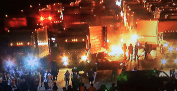

< < < Back
Will There Be Riots In America The Day After Donald Trump Wins The Presidency? – Return Of Kings
The above photo was snapped in Ferguson as thugs burned the city down. Could we see a repeat of that fateful event and perhaps a worsening of it soon to a city near you?
The election is the focus of every news channel ad nauseum. But few people are focused on the day after the election. No matter who wins this year’s presidential “selection” the possibility of civil unrest the day after election day and beyond is a real possibility. Are you ready for chaos if it develops?
The nation is so divided we are likely to run into problems.
The ugliest scenario for the day after election day plays out if Trump wins. If Trump wins, get ready for Black Lives Matter, the Black Panthers, The Race (La Raza) and other racially motivated anti-white groups to come out and possibly start burning cities down again. After all, they have been given carte blanche all year long to do so in Ferguson, Baltimore, Charlotte, and San Jose. A worrisome precedent has been set.
Of course, Trump won’t be in power the day after election day (we have to wait until Inauguration Day for him to clean up any potential messes) so Barack Hussein Obama is likely to give the racial hate groups the green light once again while the media whips out their collective Stradivarius, plays my heart bleeds for thee, and sympathizes with the devils destroying the nation.

If The Bitch wins conservative groups may clash with leftists over rights being stripped away
If Hillary wins, there’s the real possibility of protests the day after the election, and the social conditioning of whites to be polite and docile even as they’re railroaded in what was formerly their nation may not hold this time around. A Hillary win means the chaos and possibly violence could wait until she starts stripping constitutional rights away. Then, we are likely to see conservatives finally come out and start raising some righteous hell. There could be racially motivated clashes on the horizon as white people standing up for themselves goes against a long-established narrative that they’re all evil racists.
Few people think of the effects civil unrest could have on their livelihood and well-being. It’s time for a little education on just how thinly stretched the American supply chain is, and what could happen with only a short-term disruption in it.
Here’s a scenario – just one of many possible scenarios. Video of rioters stopping and then looting a semi tractor-trailer in Charlotte is worrying because if trucks stop, America stops. If attacks on truckers happen often enough, truckers may decide it’s not worth the risk to their lives to continue moving freight around and stop driving. Within a day, bedlam could ensue as the supply chain runs on a razor’s edge in modern America and everything from food to medication to gasoline starts running out.
Supply Chain

Rioters broke into trucks on I-85 and burned cargo in Charlotte
According to the American Trucking Association (ATA) a disruption of 24 to 48 hours means hospitals and nursing homes would run out of food. Fuel supplies at gas stations would also run out in that time frame. Garbage would start to pile up. Most grocery and retail stores would start to run out of food and merchandise. ATM and bank cash supplies would also run out.
The tight rope the corporate system walks quickly breaks when merchandise stops moving.
As an example, the ATA tells us this is what happens during a hurricane. Imagine what would happen with days or weeks of rioting in major cities.
In a hurricane situation, supplies that would normally last a few days, such as water, powdered milk, and canned meat, typically disappear within one day. Given these inventory rates, this means that perishable goods could be depleted in a matter of days and non-perishables in just a few days. Runs on food and non-food staples during hurricanes, and even before big winter storms, provide a good example of how fast some retail inventories can be depleted during panic buying. The same quick depletion of inventories could occur if trucks stopped making deliveries for any reason.
Panic buying means no food on the shelves. When people don’t have food at home and then the grocery store doesn’t have food, rioting will intensify. Things could get ugly in a hurry as one small disruption leads to a domino effect, after which Bedlam ensues.
So, it is best to be prepared with non-perishable items just in case things get out of hand. Have at least several weeks food supply on hand. But, how do you stop people from coming and taking your stash?
Be Armed
The police won’t be around to protect you if Bedlam ensues
Contrary to gun propaganda from the media, you absolutely want to be armed in the event the election and its aftermath don’t pass peacefully. What happens when stores no longer have food and gas stations no longer have gas? Gangs form looking for homes that do have those items.
They’re going to pick out the weakest home in the neighborhood and pounce.
A home with guns is a safe home. Just as this YouTube video shows, armed thugs may bust into a house looking for money or food, but they started jumping through plate glass windows and scrambling like cockroaches once the homeowner came out with guns blazing.
Several handguns with extra ammunition are advised. Know how to use them. Be steady with the trigger. And don’t be afraid to use them if looters come to your house.
The police will NOT be there to protect you as they’ll have their hands full with the chaos.
Better To Be Safe Than Sorry

The idea of an intact nuclear family may be a trite memory, but protecting your loved ones is still key
With the meltdown of America happening right before our very eyes, we are entering an unstable period in the nation’s history, to say the least. No matter who wins the election the nation we once knew and loved is passing away. Trump may be able to turn things around temporarily, but even if he does the country now has so many immigrants it will be impossible to assimilate them all.
We are entering a period in which America will resemble a third world country more and more. The demographics of the nation are being changed on purpose so white people are diminished at the ballot box and Democrats will gain a lock grip on the levers of power in the nation in the coming years. Divisions between rich and poor will grow, and the evil media will be there stirring the pot with racial, class, and gender division every step of the way. Peace will become a thing of the past as squabbling factions compete with each other for dominance.
In this transition from prosperity to despotism, it is best to be safe than sorry. The day after election day will be telling in that it will set the tone for the next four years. It may be a somewhat peaceful turn towards Communism if The Bitch wins, or it may not be.
But my money is on a steady degradation of civil society in the coming years. Tend your own garden, as I know I will be tending my own. My military friends are already discussing what will happen in SHTF scenario. You should be thinking about it, too.
Read More: Has The Theft Of The 2016 Presidential Election Already Begun?